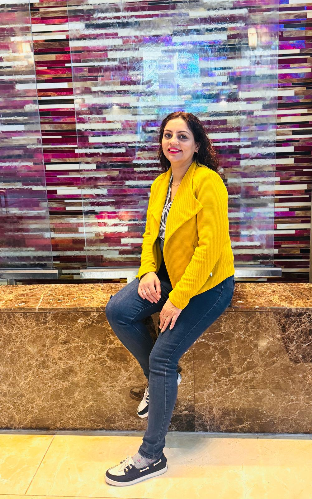

Wealth Building
Thoughtful strategies that support long-term growth and stronger financial foundations.
Smart finance consulting
Build a future with clarity, confidence, and purpose. Nishima Berry provides thoughtful financial guidance focused on protection, long-term planning, and legacy building, helping families make informed decisions with confidence and peace of mind. Through practical strategies and a caring, education-first approach, she empowers individuals and families to create financial security for every stage of life.
What We Do
We simplify important financial choices and bring clarity to complex situations, helping individuals and families understand their options and take confident next steps. The goal is to make financial decision-making feel more structured, more personal, and easier to act on without overwhelm or confusion.
Thoughtful strategies that support long-term growth and stronger financial foundations.
Education-first guidance around tax-efficient strategies and opportunities to plan smarter.
Helping families understand how to protect assets and manage financial risk with confidence.
Practical support around health-related protection and coverage decisions that affect family stability.
Clear guidance for preparing income, protection, and long-term confidence for future retirement years.
Helping families prepare early and plan with purpose for future education needs.
Will and trust guidance that supports smoother transitions and protects future family goals.
To protect your wealth, secure your family's future, and inheritance.
Why Families Reach Out
Nishima's work is especially meaningful for families who want to reduce confusion, understand financial rules, and build a more secure long-term path. Many families seek support for annual financial reviews or simple financial check-ups to stay organized, informed, and confident about their direction.
Support is available in a way that fits each family's needs, either online or in-person at your doorstep, depending on preference and convenience.
All guidance is provided as a complimentary educational service, focused on helping families feel more informed, prepared, and confident in their financial journey.
Nishima Berry combines deep experience in Financial Planning & Analysis (FP&A) and enterprise finance with a genuine passion for helping individuals and families make informed financial decisions. With a strong foundation in financial strategy, planning, and business operations, she transforms complex financial concepts into practical guidance that people can confidently apply to their everyday lives.
Nishima is passionate about making financial education accessible and personalized, especially for families navigating wealth building, tax-efficient strategies, asset and risk management, protection planning, and long-term financial security in the United States. Her mission is to help families not only understand their financial opportunities, but also feel empowered to take control of their future with confidence and peace of mind.
Through a thoughtful, education-focused approach, Nishima helps clients build strong financial foundations, protect what matters most, and create meaningful legacies for generations to come.

Testimonials
“Nishima explained everything in a way that finally made sense. I felt informed, calm, and much more confident about my next steps.”
“What stood out most was her patience. She made complex financial topics feel approachable and helped our family feel less overwhelmed.”
“Nishima brings both professionalism and genuine care. The guidance felt practical, thoughtful, and focused on what mattered most to us.”
Let's Connect
Ready to bring clarity to protection, planning, and legacy decisions? Nishima is here to help you take the next step with confidence and simplicity.
Financial Educator, Entrepreneur, Proud Mother, Notary